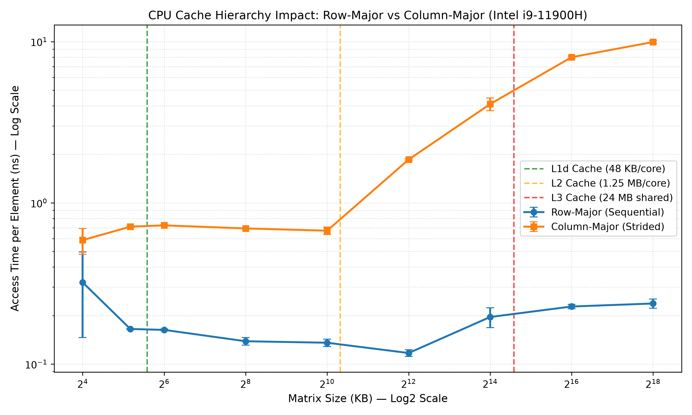

How does memory access latency per element change as matrix working-set sizes cross the L1d (48 KB), L2 (1.25 MB), and L3 (24 MB) cache boundaries of an Intel Core i9-11900H processor, and what is the quantitative performance penalty of strided (column-major) access compared to sequential (row-major) access?
To isolate hardware cache behavior from operating system noise and runtime artifacts, a controlled empirical benchmark was designed and executed under the following specifications:
int[][]) are arrays of object references scattered across the heap. To guarantee a contiguous physical memory layout equivalent to C/C++, matrices were allocated as flat 1D arrays (int[N * N]) indexed via r * N + c (row-major) and r * N + c with outer-loop column iteration (column-major).N from 64 to 8192) were selected to span all memory hierarchy tiers: 16 KB and 36 KB (L1d), 64 KB to 1024 KB (L2), 4096 KB and 16384 KB (L3), and 65536 KB to 262144 KB (RAM).-Xms1G -Xmx1G) to prevent heap resizing pauses. Each size underwent 3 JIT warm-up runs followed by 15 measured runs timed via System.nanoTime(). Smaller matrices were iterated multiple times per run (reps up to 4096) to eliminate timer resolution error. A volatile long blackhole variable consumed loop sums to prevent Dead Code Elimination (DCE).results.csv (using Locale.US formatting) and processed in Python 3.12 to compute arithmetic mean, standard deviation (SD), and slowdown ratios (Column-Major Mean / Row-Major Mean).Table 1 summarizes the aggregated latency measurements across all nine matrix dimensions, and Figure 1 visualizes the latency trajectories relative to the processor's physical cache boundaries.
| N | Matrix Size (KB) | Memory Tier | Row-Major Mean ± SD (ns) | Col-Major Mean ± SD (ns) | Slowdown (Col / Row) |
|---|---|---|---|---|---|
| 64 | 16.0 | L1d (≤48 KB) | 0.3211 ± 0.1749 | 0.5873 ± 0.1070 | 1.83x |
| 96 | 36.0 | L1d (≤48 KB) | 0.1651 ± 0.0011 | 0.7118 ± 0.0095 | 4.31x |
| 128 | 64.0 | L2 (≤1.25 MB) | 0.1630 ± 0.0019 | 0.7252 ± 0.0071 | 4.45x |
| 256 | 256.0 | L2 (≤1.25 MB) | 0.1386 ± 0.0075 | 0.6938 ± 0.0053 | 5.01x |
| 512 | 1024.0 | L2 (≤1.25 MB) | 0.1356 ± 0.0073 | 0.6721 ± 0.0355 | 4.96x |
| 1024 | 4096.0 | L3 (≤24 MB) | 0.1171 ± 0.0055 | 1.8560 ± 0.0242 | 15.85x |
| 2048 | 16384.0 | L3 (≤24 MB) | 0.1959 ± 0.0278 | 4.0985 ± 0.3650 | 20.92x |
| 4096 | 65536.0 | RAM (>24 MB) | 0.2276 ± 0.0073 | 8.0046 ± 0.1270 | 35.18x |
| 8192 | 262144.0 | RAM (>24 MB) | 0.2375 ± 0.0157 | 9.9463 ± 0.1881 | 41.87x |

The experimental data reveal three distinct architectural phenomena:
This study empirically confirmed that memory access pattern alignment with CPU cache architecture is a primary determinant of execution performance. On an Intel Core i9-11900H, identical arithmetic workloads differed by a factor of 41.87x at 256 MB purely due to loop ordering. Writing cache-friendly, sequentially aligned data structures allows modern hardware prefetchers and SIMD units to mask RAM latency almost entirely, whereas strided access patterns suffer severe penalties once working sets exceed L2 and L3 cache capacities.
All source code (CacheBenchmark.java, analyze.py), raw experimental datasets (results.csv), generated plots, and step-by-step reproduction instructions are publicly available at:
https://github.com/Acabbro/CacheHierarchyBenchmark
In accordance with the Student Research Challenge guidelines, the author declares that generative AI (Google Gemini) was used as a technical assistant during this project to refine the benchmark boilerplate (flat 1D array allocation, Locale.US CSV formatting), generate the Python matplotlib visualization script, and assist with academic phrasing and HTML-to-PDF formatting. All experimental executions, hardware measurements, raw data collection, and verification of results were performed independently by the author on local hardware.